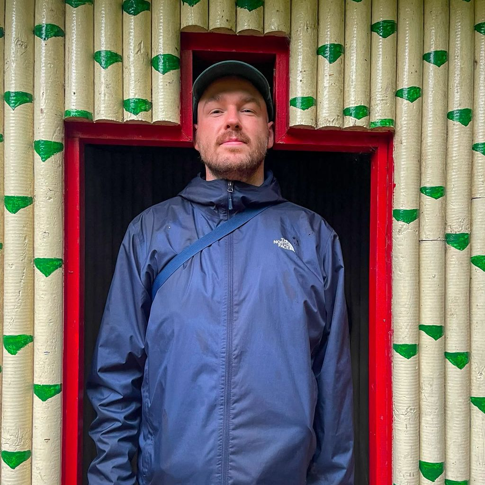
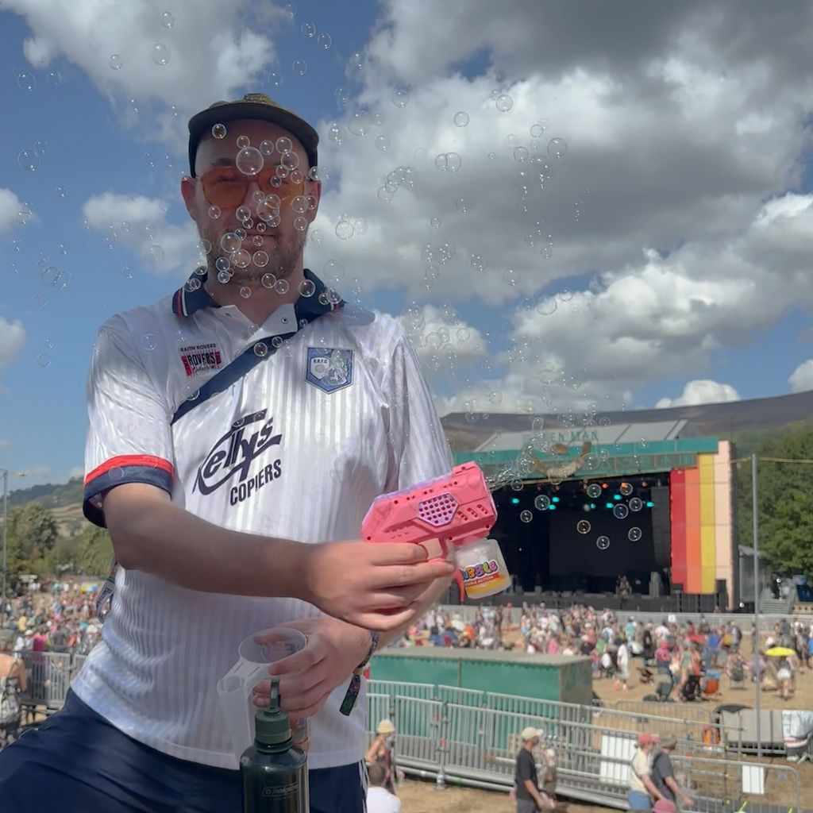

BPK
Brian Pokora · DJ & electronic music producer · Edinburgh
About
BPK is an Edinburgh-based DJ and electronic music producer exploring the space between left-field disco, psychedelic house, alternative pop and forward-thinking club music. His music moves between warm, playful grooves, hypnotic rhythms, melodic electronica and unexpected edits, balancing dancefloor energy with a curiosity for the unusual.
Alongside DJ sets, BPK performs live electronic sets built around original music, synthesizers and drum machines. He releases a new mix every month.
Brian is also a member of Both Hands (Lost Map Records). Previously he produced Slim Wrist (formerly Super Inuit), played bass in Trapped Mice, and played guitars and electronics in Future Get Down.
Latest mixes
BPK – October 2026
Kept things loose for October's mix. Weaving together various bits of dancefloor business.
BPK – September 2026
A selection of wonky and chuggy disco tinged electronica, resisting darker nights and the urge to go ambient until at least October's mix.
Tracklist
- Chinese American Bear – Dance Dance Dance (跳舞跳舞跳舞)
- Ponzu Island – Super Koto (Andras Fox extended mix)
- Torch Song, Dionigi, Baldelli – Prepare To Energize (Baldelli & Dionigi mix)
- Franc Spangler – Gamma Ray (Franc Spangler Mix)
- Shonky – Obelix
- Justus Köhncke – Timecode (Maxi Version)
- Marina Trench – Synaptic Ctrl
- Fcukers – Beatback (Justin Strauss en La Piscina Remix)
- Samaran – Paris Madness (Club)
- Chloé Caillet – Bad Bara (Midnight Mix)
- Haute & Freddy – Touch Touch
BPK – August 2026
Some nu disco/indie dance finds of late and some old faves.
Tracklist
- Payfone – International Smark (feat. Tigerlight)
- Axel Boman – Fantastic Piano
- Chinaski – Energy 2
- Alex Kassian – Leave Your Life (Dance Mix)
- Metro Area – Proton Candy
- Benjamin Fröhlich – Love Loop (Club Mix)
- Midnight Magic – Drop Me a Line (Mano Le Tough Remix)
- 40 Thieves – Don't Turn It Off (feat. Qzen) – Brennan Green Mix
- Leon Sweet – Sunny Bigler (Leftside Wobble Remix)
- Move D – To The Disco 77
- Todd Terje – Ragysh
- Nyra – Both Of Us Knowing
- Benoit & Sergio – What I've Lost
All mixes: Mixcloud SoundCloud
Videos


Music
The full discography on Spotify.
Photos




Contact
Booking & press: brian.pokora@gmail.com